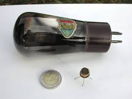
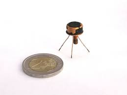

Alla fine del 2012 il transistor compie 65 anni.
C'è qualcosa che ha cambiato la nostra vita, senza che ce ne accorgessimo, più di questo oggettino elettronico?
Sfido a trovarne un concorrente...

Da quando Brattain, Bardeen e Shockley dei Bell Labs hanno appoggiato un paio di aghetti d'oro su una piastrina di germanio ottenendo un minuscolo triodo senza filamento e capace di amplificare, il mondo si è incamminato a rotta di collo verso un altro mondo, sempre più microscopico.
E allora addio vecchie valvole, elettrosauri che sopravvivono al piccoletto solo per impieghi High Power o in estetici esibizionismi di qualche audiofilo!
La legge di Moore, dagli anni '70, afferma che le prestazioni di un microprocessore (il Grande Moloch dei transistors) devono raddoppiare ogni anno e mezzo; il mio primo PC del 1987 (un 8088) era un vero morto di fame: aveva nel "core" solo 29mila semiconduttori...
Oggi abbiamo abbondantemente superato i 2.500.000.000 (due miliardi e mezzo!) in un solo microprocessore.
E quanti milioni di transistors ci sono in un banale cellulare? Milioni, milioni... così ultrapiccoli che non riusciamo nemmeno vagamente ad immaginare come facciano a farli.
Carola Frediani in un articolo sul Corriere della Sera dice che nel già lontano 2003 si stimava vi fossero nel mondo qualcosa come 10 elevato alla diciottesima transistors, vale a dire 100 volte la popolazione mondiale di formiche... e si parla del 2003, quando ancora erano pochi... di quanti ordini di grandezza saranno cresciuti in una decina d'anni?
Per festeggiare questo sessantacinquesimo compleanno tecnologico sono andato a rovistare nei miei cassetti, alla ricerca del transistor più vecchio che potevo recuperare (quasi un pezzo da museo), e lo voglio fotografare assieme ad una delle sue bisnonne, una cara, vecchia, buona, calda valvola.

Il bimbo (guarda che pacioccone rispetto a quelli di adesso!) si chiama SP558 ed è nato nel 1959, mentre la vegliarda signora è una D404 del 1928.

Buon compleanno Transistor!
Dicono che presto ti daranno un corpo fatto solamente di qualche atomo... beh, voglio vedere come ti attaccheranno i fili per darti da mangiare gli elettroni.
1 commenti